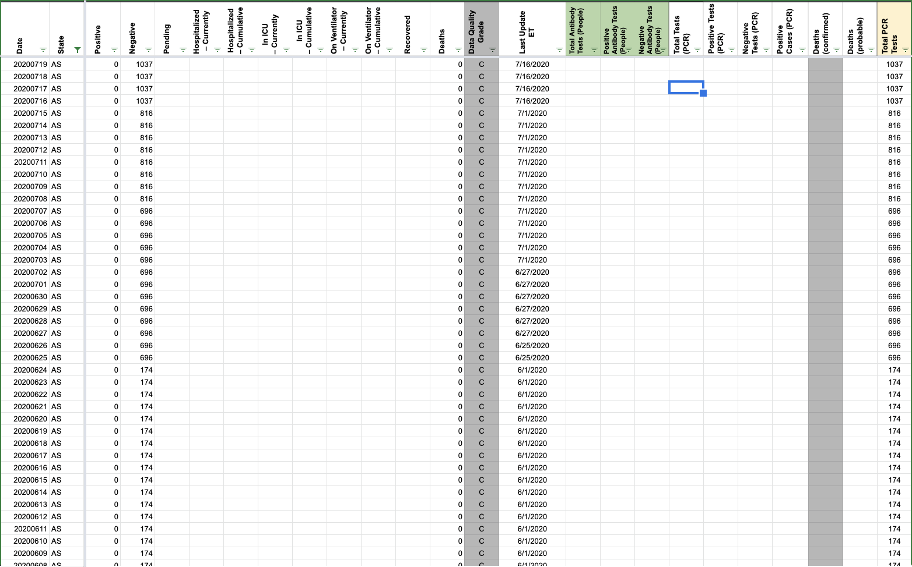
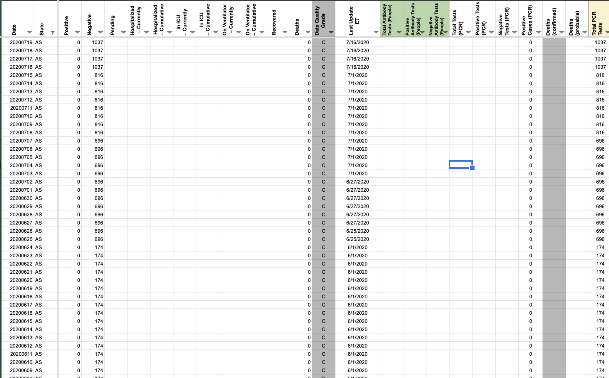

[AS] PCL Cases Historicals
Issue number 613
pscsharon opened this issue on July 13, 2020 at 9:14 am
Per America Samoa, they do not have any cases of COVID-19. Recommend we insert 0 instead of leaving fields blank to confirm the zero count.
https://www.samoanews.com/local-news/no-confirmed-coronavirus-cases-identified-american-samoa
Additional Information: https://www.kitv.com/story/42343929/american-samoa-has-no-confirmed-cases-of-covid19 https://www.nytimes.com/2020/05/06/us/coronavirus-american-samoa.html https://www.who.int/americansamoa/our-work https://www.samoanews.com/covid-19
WS2 pop-up change requested. Confirmed 0 cases since tracking inception and that 0 can be put in PCR confirmed cases to clarify and confirm the absence of cases. 0 case values copied to V in States Daily.
Before:  After: 